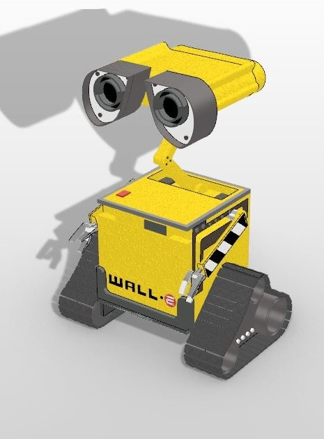

Modelowanie 3D
Model został wykonany przy pomocy programu Rhino 6. Podczas zrealizowanego projektu w ramach laboratoriów z Grafiki
Komputerowej zamodelowano postać na podstawie przykładu ze strony
producenta programu Rhino z sekcji mecha.
Tematem projektu stała się postać bohatera bajki Wall-E.

2019 © Mateusz Mizio - Portfolio. Projekt GKO 2018/2019